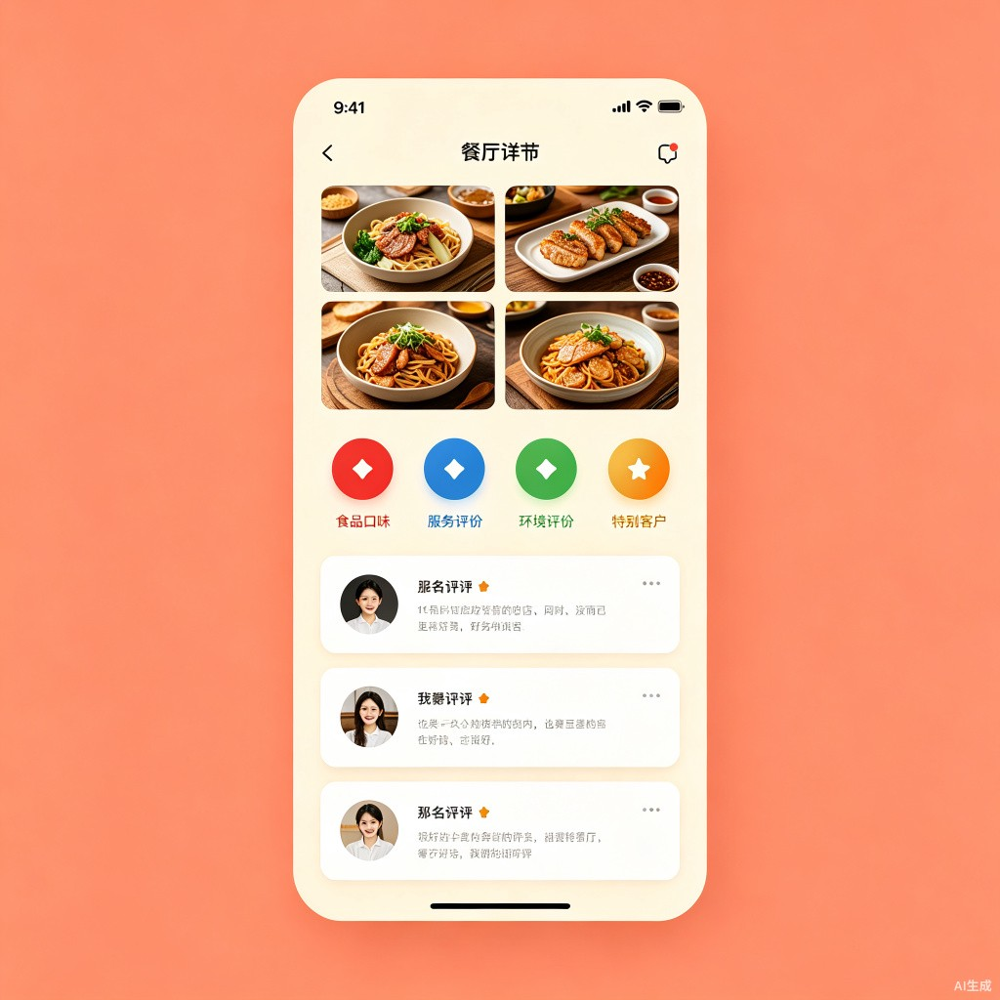
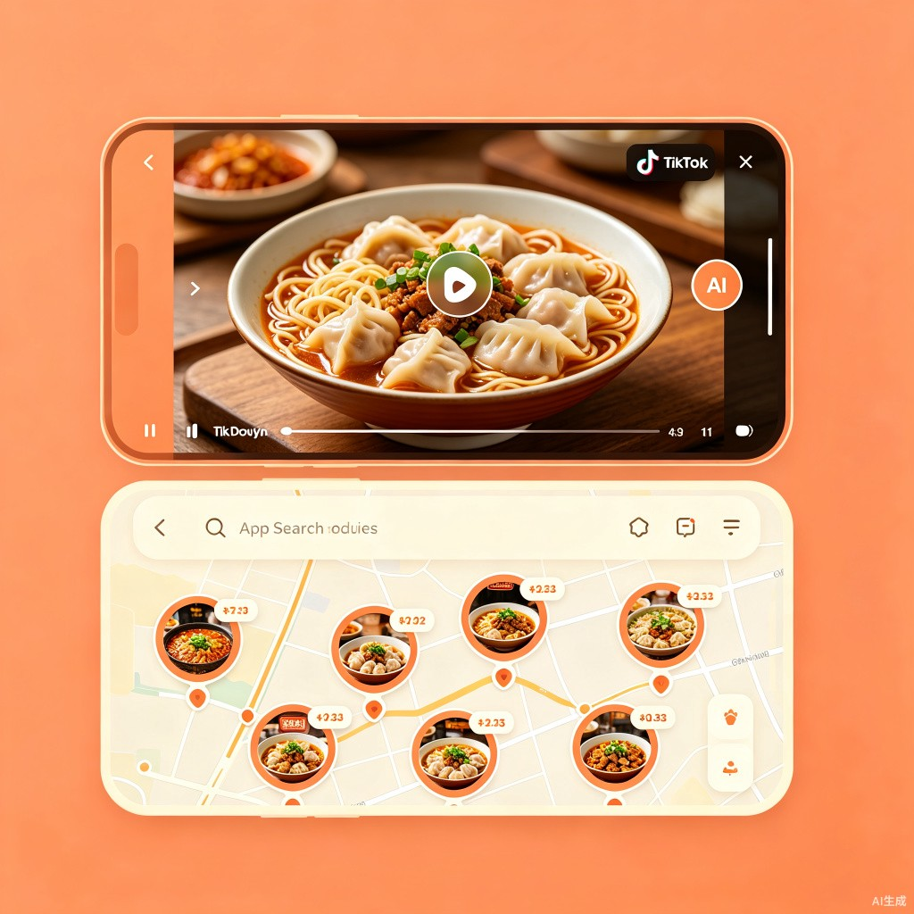

味圈
真实美食发现地图
用回头客的真实口碑，点亮你身边的每一口好味道。告别流量造假，让真正的美味被看见。

创意名称 + 创意介绍
About the Idea
「味圈」—— 真实美食发现地图 APP
想解决什么问题：到一个新地方，打开小红书或抖音搜索当地美食，满屏都是精心包装的营销内容，难分真假。那些真正藏在巷子里、靠口碑生存的老店，反而被流量算法淹没。
灵感来源：作为一个热爱探索本地美食的人，我多次被"网红店"坑骗——排队两小时，味道却平平无奇。而那些本地朋友推荐的、没有营销预算的小店，反而给我留下了最深刻的印象。我意识到，真正的好味道不需要流量扶持，需要的是真实的回头客口碑。
产品形态：一款基于地理位置的美食地图APP，用户可以在地图上"点亮"自己发现的美味小店，用照片和简短评价分享真实体验。每家店铺除了常规的食物、服务、环境三项评分外，还创新性地加入了「回头客评分」——统计用户重复到店的比例和频率，让真正经得起考验的好店脱颖而出。
杀手级功能——抖音联动·识屏找店：用户在抖音刷到令人垂涎的美食视频时，只需呼出味圈的「识屏」功能，AI即可自动识别视频中的菜品， instantly 在地图上标记出附近提供这道菜的店铺，并附带真实食客评分和回头客数据。从"看到想吃"到"知道去哪吃"，只需一步。

目标用户及痛点
Target Users & Pain Points
旅行者
来到陌生城市，不想被游客店宰客，渴望像本地人一样找到真正正宗的地道美食。
本地美食探索者
厌倦了连锁品牌的千篇一律，热衷于挖掘家附近那些不为人知但味道惊艳的小店。
厌倦网红店的年轻人
被"照骗"坑过太多次，对滤镜美食和营销内容已经免疫，只相信真实用户的推荐。
认真做菜的餐饮人
没有预算做营销，但对自己的菜品有自信，需要一个让好味道被公平看见的平台。
用户当前痛点
-
1
信息噪音严重
现有平台上充斥着广告、探店合作和虚假好评，用户需要花费大量时间筛选，仍然难以判断一家店是否真的好吃。
-
2
评分系统失效
刷分、刷评论已经成为行业潜规则，五星好评不再等于好味道，用户信任度持续下降。
-
3
好店被埋没
真正有实力的中小餐饮商家因为没有营销预算，在流量竞争中处于绝对劣势，好味道无法触达目标用户。
-
4
缺乏"时间检验"维度
现有平台只关注单次体验评分，无法反映一家店是否能长期保持品质——很多店开业时惊艳，三个月后品质断崖式下滑。
价值与意义
Value & Significance
商业价值
建立基于真实口碑的本地美食推荐平台，通过精准的用户-店铺匹配创造商业机会。平台可向入驻商家提供数据洞察服务，帮助其优化菜品和服务；同时可发展预约订座、团购优惠等本地生活服务，形成可持续的商业闭环。
效率提升
大幅减少用户寻找美食的决策时间和试错成本。通过地图可视化+真实口碑的组合，用户可以在5分钟内锁定目标店铺，无需在大量无效信息中反复筛选。"回头客评分"更是提供了其他平台没有的时间维度参考。
产品展示
Product Showcase
核心功能：四维度评分体系
除了常规的口味、服务、环境三项评分，「味圈」创新性地引入「回头客评分」——通过追踪用户的重复到店行为，用真实数据回答一个关键问题：这家店值得你再去一次吗？
用户使用流程
抖音联动 · 识屏找店
看到抖音上的美食，立刻知道附近哪里有
抖音上美食内容更新极快，用户常常刷到一道诱人的菜就产生了强烈的食欲，但根本不知道附近哪家店能做这道菜。传统搜索方式需要手动输入菜名、逐个查看评价，流程繁琐且结果不准。
识屏功能如何工作：
- 用户在抖音看到心仪美食，呼出味圈「识屏」悬浮球
- AI视觉模型自动识别视频中的菜品名称和类型
- 味圈在地图上高亮标记附近提供该菜品的店铺
- 每家店显示味圈独家四维度评分 + 食客实拍图
- 一键导航到店，完成从"心动"到"行动"的闭环
与抖音的区别：抖音解决的是"让你看到美食"，味圈解决的是"让你吃到美食"。两者形成完美的上下游互补关系——抖音激发食欲，味圈完成落地。

与百度地图、高德地图、大众点评的区别
可视化差异：味圈的地图上，每一家店都用一个包含实拍菜品缩略图的「小圆圈」来标注，一眼就能看到这家店卖什么、长什么样，而不是冷冰冰的POI图标。
信息深度差异：点击圆圈进入店铺主页，可以看到完整的店内环境实拍、菜品照片，以及最重要的——来自真实食客的评论和回头客数据。这不是商家自己上传的精修图，而是用户实地拍摄的真实画面。
评分维度差异：传统地图只有简单的好评/差评，味圈提供食物、服务、环境、回头客四个维度的量化评分，帮助用户做出更精准的判断。
内容联动差异：百度高德没有内容平台联动能力，大众点评虽有内容但真假难辨。味圈独创「抖音识屏」功能，打通了短视频平台与线下消费的链路，这是目前市面上任何一款美食地图产品都不具备的能力。